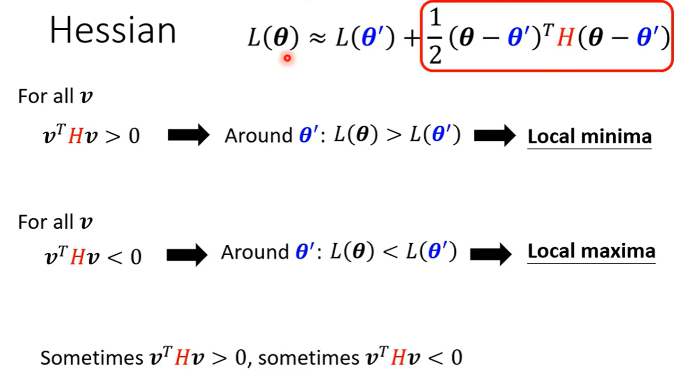
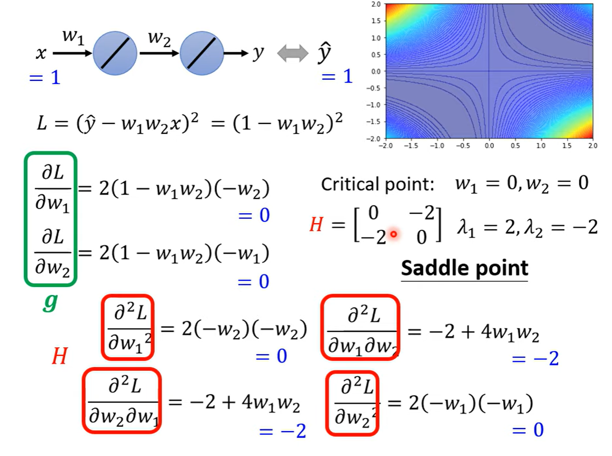
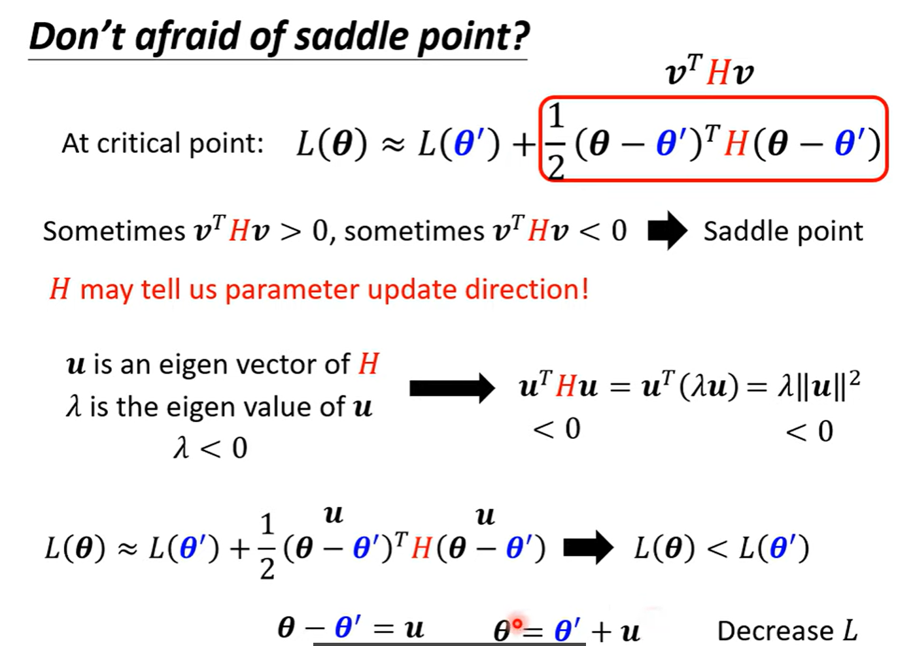
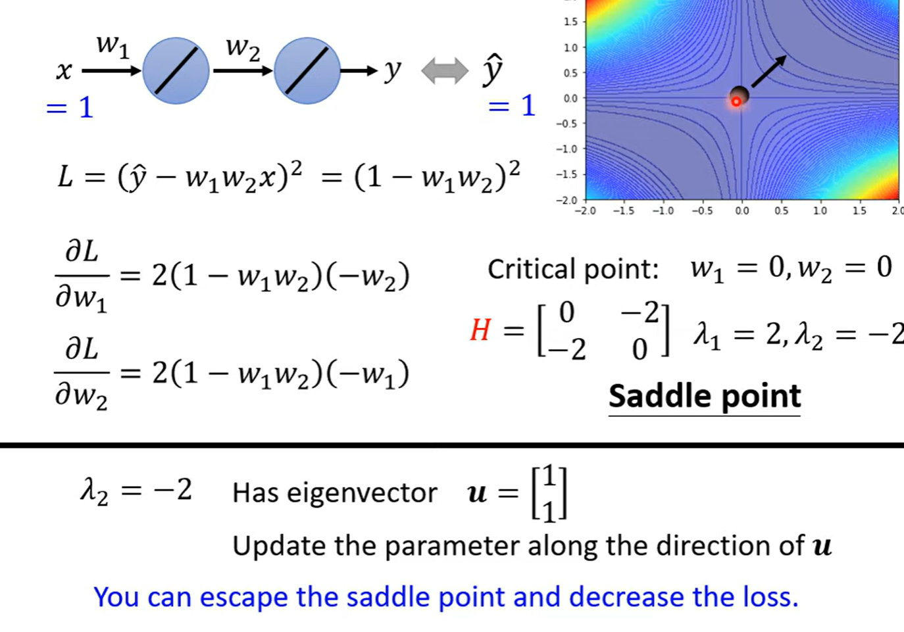
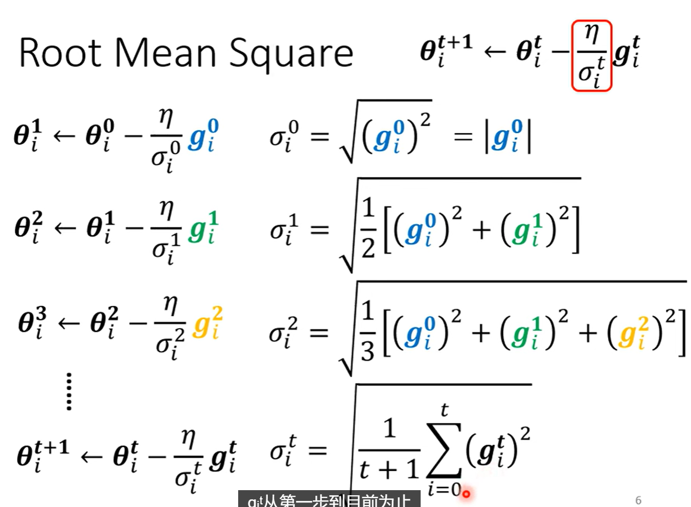
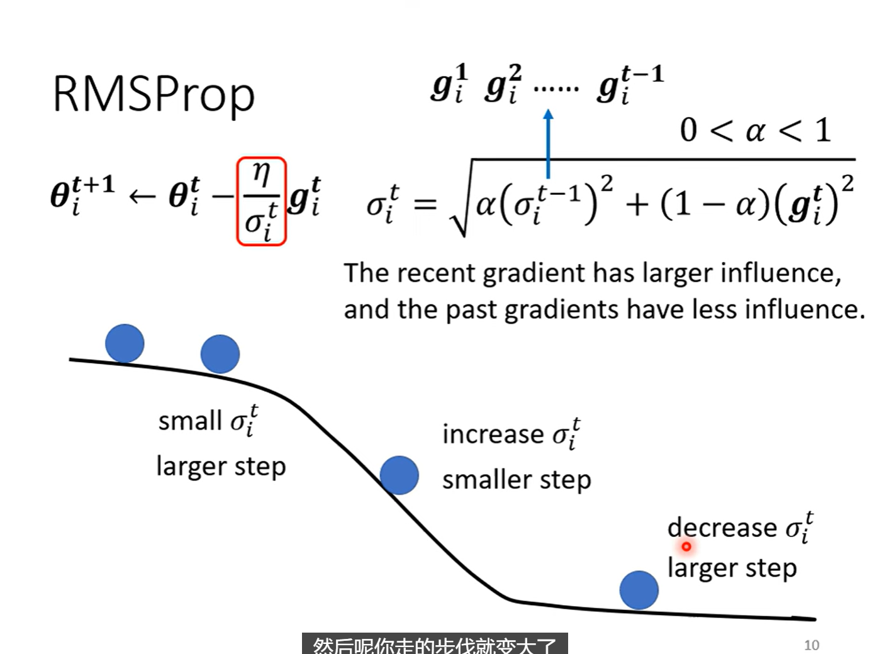
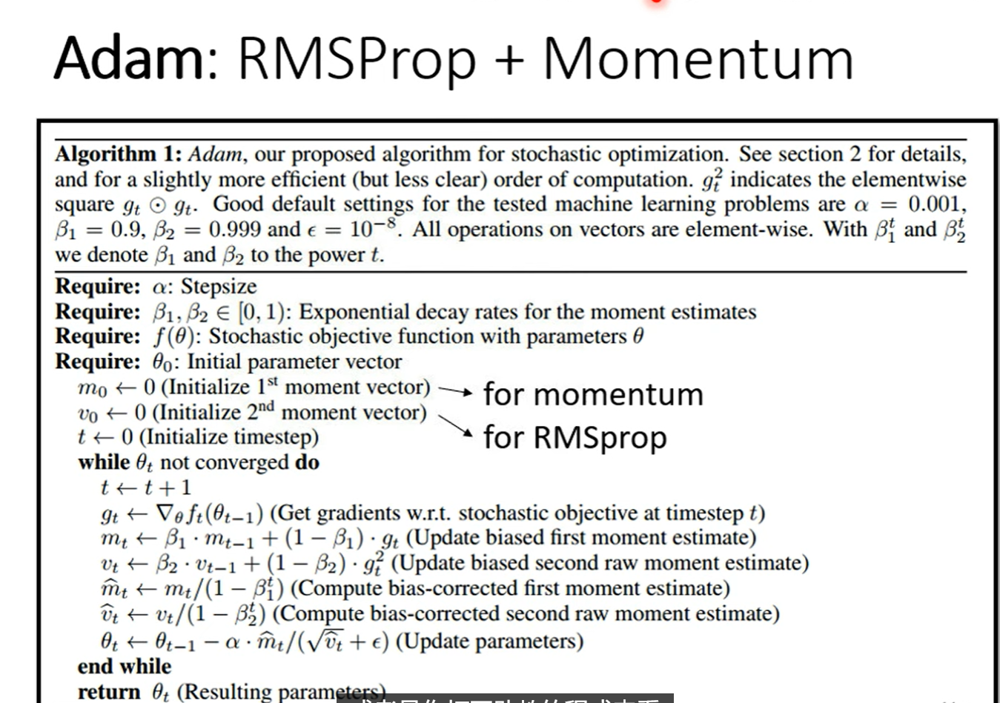
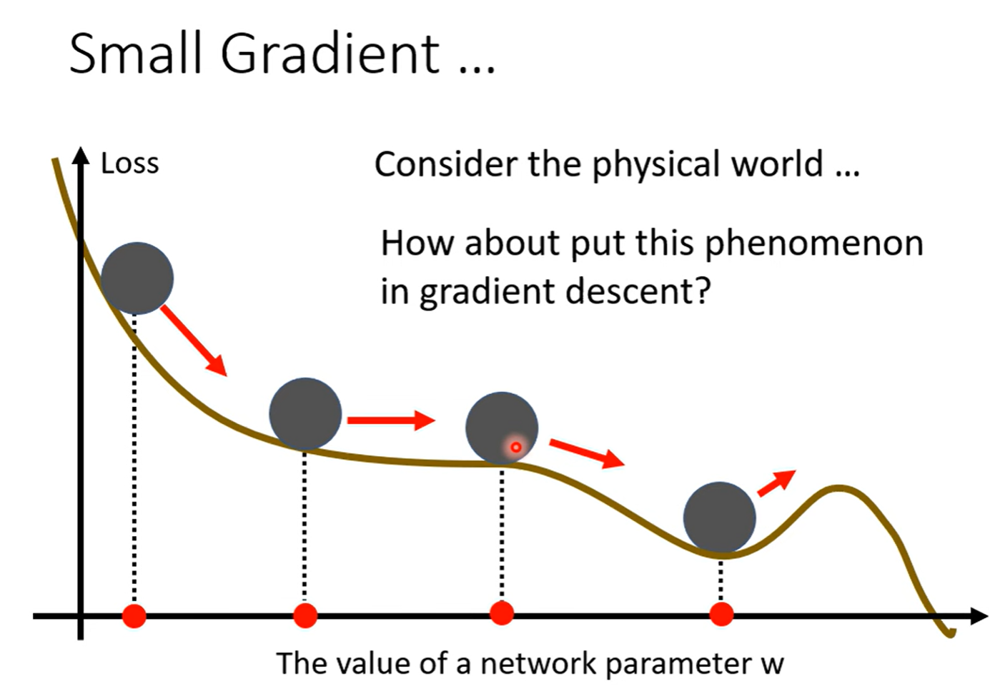
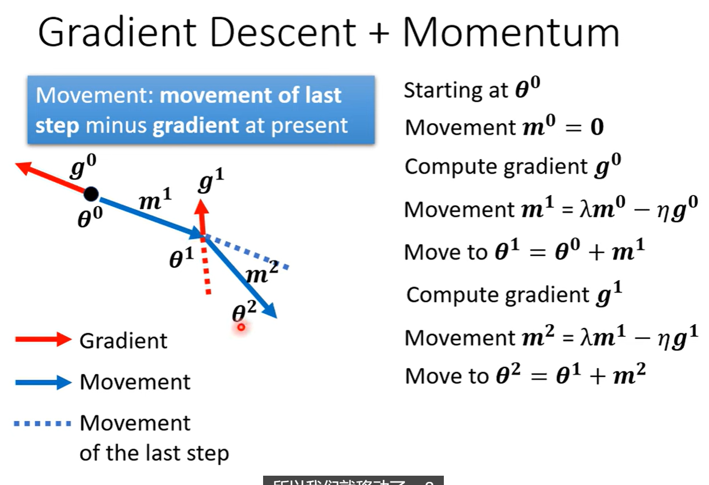

Optimization
I. Optimizer
1.1 local minima vs saddle point

1.2 Taylor Series Approximation

critical point: gradient = 0, the hessian tell if local minima, local max and saddle point
\(v=(\theta - \theta')\)
我们重点关注：\(v^T H v\)

没有必要去考虑任意值，有简便方法：
\(H\)是正定矩阵（所有特征值大于0），则\(v^T H v\) 恒 \(>0\)
\(H\)是负定矩阵（所有特征值小于0），则\(v^T H v\) 恒 \(<0\)
否则，为saddle point
案例


g: 一阶导数/梯度
H: Hessian矩阵：
解决sddle point
找hession矩阵的负特征值的特征向量方向


1.3 Saddle point vs Local minima
会不会在更高维的空间中有路可以走
维度为高，能走的方向就越多，那么是不是说：
维度越高，Local minima就越少呢?
实践：

1.4 Small gradient 与 Saddle point的解决办法
1.5 If not a critical point
当Loss不再下降时，gradient真的一定变得很小吗啊？
并非！

Error Surface：来回振荡！
原因：Gradient Descend做不好，即便是连简单的训练集：

突破点1：及时修改Learnig rate
如上图，Learning rate代表每次梯度下降需要走的步长，Learning rate越大代表步长越大，反之越小。
该方法中，将此前一直相同的Learning rate动态变化：

\(\sigma_{i}^{t}\)是参数种类的函数，也是时间的函数，由此来调控Learning rate，更新步长\(m\)
\(\sigma_{i}^{t}\)的计算方法：——前面所有的梯度的均方根


但是，有个问题！即便是同一个参数，同一个梯度方向，我们也希望Learning rate也可以动态调整！

突破点2. RMSProp

以下图中间的大坡为例：
大的gradient需要小的步长，即大的这个时候我们希望\(\sigma_{i}^{t}\)也尽可能大一点，这就需要我们刚刚得到的大gradient权值更重一点！，因此，我们就可以把\(\alpha\)调小一点来解决这个问题。
个人立即RMSProp就是将之前的均方根做法修改为了梯度加权的均方根，使得Learning rate自适应gradient进行调整。

现在的效果：
实际应用场景：
Adam : RMSProp + momentum


越快要靠近终点，Learning的调整导致的！
快要靠近终点的时候，纵轴方向连续出现的梯度都很小，导致在这个方向累积了很小的\(\sigma\)，使得纵轴方向的步长变得相对较大。
解决这个问题的方法：
突破点3：Learning rate decay or Warm up

Learning rate 随着全局时间演进而逐渐衰减。
II. Batch
2.1 small batch vs large batch
合理范围内，大的Batch的迭代速度和小Batch一样，因为有GPU
但是小Batch的Noise的gradient反而可以帮助training，可以帮助逃离 Local minima 或者 saddle point

Batch size 也是一个需要自己设定的超参数

2.2 另一种破解Local minimum的技术——momentum

Gradient Descend

Gradient Descend + Momentum
计算出来的梯度的反方向+前一步的方向，共同考虑

例如\(\mathbf{m}^2 = \lambda \mathbf{m}^1 - \eta \mathbf{g}^1\)
示例：